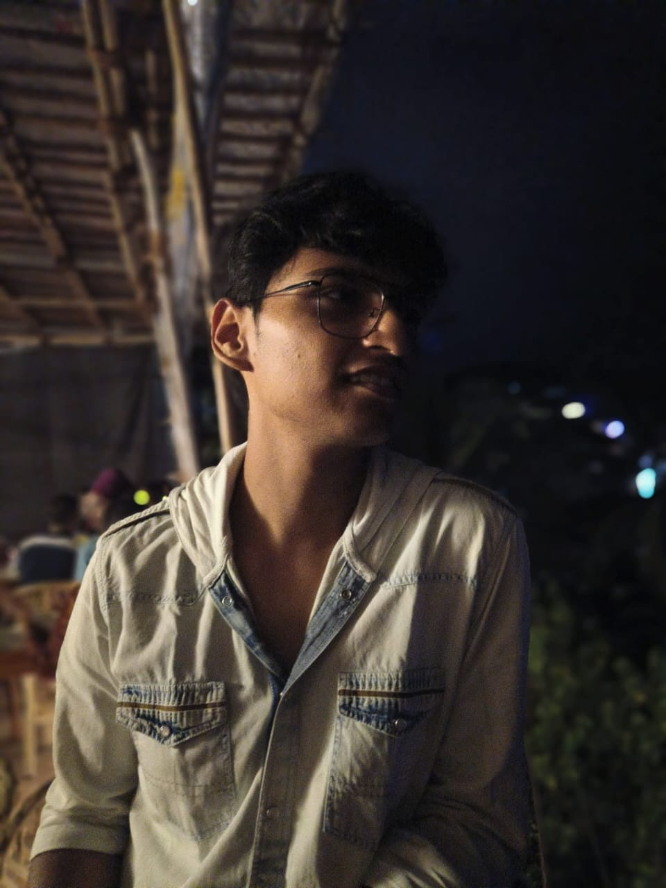

Keshav Goyal

Summary
I am currently a sophomore studying in the Computer Science Department at Birla Institute of Technology and Science (BITS), Pilani, Goa Campus.
My academic journey so far has equipped me with a strong foundation in various areas of computer science.
I have gained knowledge and hands-on experience in data structures,database management, digital design, OOP.
Additionally, I have honed my skills in web development, learning to build and maintain websites or web applications.
Education
- 10th(CBSE)- 90%
- 12th Non-Medical(CBSE)-95%
- Bachelor of Engineering(B.E.) Computer Science
Work Experience
- Worked as Business Developer Intern at a tach based Startup-SEOLO
- Worked as core in ASCII, BITS GOA(Student Fcaulty Comittee)
- As Consultant in BGCC
- As Intern in B2B startup NITISARA.
Skills
Soft Skills
- Communication
- Event management
- Event Planning
- Team Collaboration
- Leadership
- Project Mangement
Hard Skills
- C++
- C programming language
- Python
- Java
- Verilog
- HTML
- CSS
- JavaScript
- SQL
- React.js
- Microsoft EXCEL
Projects
- Made a program for course allocation to universty professons.
- HTML Resume
Awards and Certifications
- Voluteer at Nirmaan(NGO)
- Python Bootcamp-UDEMY
- The Complete Web Development Bootcamp-UDEMY